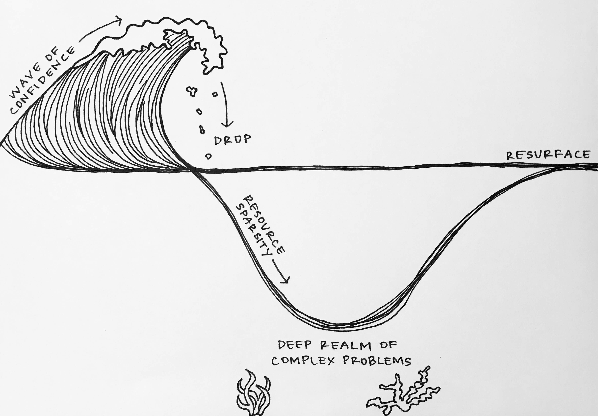

Description
Our Drupal community is as strong as our ability to share our practice with others. To successfully teach others, we need to first step back and remember the obstacles Drupal beginners face. I came across an interesting diagram comparing the inverse relationship between confidence and knowledge when it comes to learning in the tech world. I enjoy expressing concepts through visual representations, so I decided to draw my own version.

As I continue to encounter these learning curves, I can't help but ask -- what can make this process easier? As developers, we will always return to this learning curve as we move with innovation and from project to project, needing to learn new ways to encounter unique problems. We will continue to face waves of learning no matter what our expertise or experience level. It's inevitable, so how can we make it better?
What if we had a seed project with good practices implemented for beginners to interact with? What if we had a "stupid questions" lunch to create a safe environment to ask anything about Drupal? What if we blocked off an hour each week for more seasoned developers to teach a "Drupal class"? What if we had beginners teach, so we understand how they are learning?
Within our Drupal community we have a wealth of experience and ideas. By continuing to share our knowledge we create feedback loops that improve our processes and help people resurface faster.
In this talk I will explore the Drupal learning curve and offer my experience and perspective learning Drupal.
We'll discuss how to:
- Keep learning curve momentum
- Improve the quality of our learning
- Onboard our teams more efficiently
Laura Haskell
Drupal Developer @ VMLY&RLaura flipped her career from marketing to technology with LaunchCode, a non-profit organization helping individuals land careers in technology. She started working with Drupal at VMLY&R and enjoys continuing to learn through and give back to the community. She is currently co-coordinating Kansas City's 2nd Annual Drupal Flyover Camp with the Kansas City Drupal User Group.
She is also passionate about supporting diversity in technology and volunteers as the Internal Technology Director for Kansas City Women in Technology, a grassroots organization helping to grow the number of women in technology careers in Kansas City.

Transcript
>> DWAYNE McDANIEL: And let's give a big MidCamp welcome, even though you're all muted, to Laura, for surviving the Drupal learning curve.
>> LAURA HASKELL: Perfect. Thank you. Thank you, everyone, for joining. I'm going to go ahead and get started. But first, just thank you so much to the MidCamp team, because I know this was no small feat to coordinate. But continuing on under the circumstances.
And also, thank you to all the MidCamp sponsors for making this possible.
And just a friendly reminder, Contribution Day is still happening. It will be virtual. More details on the site there and also on the Slack channel, but be sure to join for sure.
So, my name is Laura Haskell. I am going to talk to you about surviving the Drupal learning curve. Before I dive in, I wanted to give a little background on myself and just my perspective, and where I'm coming from.
I've been in the tech industry for a little over a year, actually. I have a degree in marketing. And at the beginning of my career, I was in the marketing world and some client experience roles. I guess you could say I was in the front end of the business world, but I quickly realized I preferred to be behind the scenes in the back end.
I was able to take the leap into a new tech career with the help of Launch Code, and I just want to talk a few seconds to talk about what they do, because I'm very grateful for the opportunities they have given me.
So Launch Code is a non profit organization. They offer free coding courses to individuals wanting to get into the tech world. But what is unique is that there are no barriers to entry in terms of prerequisite classes or prior experience or anything related to tech. People come in from really the widest range of backgrounds you can imagine, and they also have very robust relationships with the companies in the area, so that allows them to place launch coders with companies to apply the skills they've just learned and land a job in tech.
So, I took one of launch code's courses and I am now a developer at VMLY&R. I also volunteer as the tech director for a non profit organization, Kansas City Women in Technology, working to grow the number of women in the KC tech scene.
I also assist with coordinating Kansas City's Drupal fly overcamp, which is coming up for a second year in December, or September, excuse me.
So, VMLY&R is where I got my first introduction to and started working with Drupal. So, that being said, the process is starting from the very beginning and learning Drupal is something I've experienced over the past year. And just like trying to learn anything new in the tech world, the learning curve is hard. And I really think that our Drupal community is as strong as our ability to share a practice with others, and to successfully teach others, we first need to step back and remember the obstacles that Drupal beginners face.
So, with any learning curve, whether it is Drupal or really any new foreign concept, tech related or not, a common representation is the inverse relationship between confidence and knowledge. I consider myself to be a very visual learner, and visual representations help me form strong associations. So I want to draw out what this relationship looks like to me.
So what I envision is waves. A lot of ups and downs. I'm going to break apart each of these sections of the learning curve further, but to give an overview first, usually when we start out on our learning journey, we can shoot upward with a wave of confidence and it's because we have a plethora of hand holding resources that can get us to a basic level of knowledge. And we feel like the current is moving with us.
However, the reality is we may not fully understand the inner workings of how all the moving pieces are fitting together. As we run out of those highly polished tutorials, there's a moment of realization that we might not have all the tools we need. This drop in confidence is when we try to venture out from resources out on our own. We can fizzle out where we need more specific solutions to project specific problems.
The scope of what we need to know is at its peak, but we can find ourselves getting lost in the undertow and struggling to resurface because there are infinite paths, but really sparse resources to target the specific problems.
So, to better understand how we can prevent the drop in momentum, let's take a closer look at each part of the learning curve. This will help us understand what typically happens, and how we can improve our processes to help beginners.
So if you Google Drupal 8 tutorial, there are 11.5 million search results. Scanning the first page, you'll see some highly polished resources, like Drupalize Me, and you can spend hours looking at these sites and watching tutorials and this is where we often have the misconception of equating hours spent reading and watching these tutorials, to understanding actually gained. The time and effort you dedicate is important and boosts your confidence, and I like thinking of this as the hello world phase, because you have the skills, you get something basic on a page, and that feels good. You only have that in basic level of knowledge.
You learn all the shiny words and maybe you can hold a high level conversation, and you start feeling comfortable with the terminology. But the key really is you are not fluent yet. As the problems and projects you face start becoming more complex, you start realizing you may not be fully equipped to take them on.
This is where we can reach a point of confusion and frustration, because we keep reaching back to those initial tutorials we're looking at in documentation, but we really need a deeper level of understanding, so we feel our confidence start to drop. This is when I find myself with 20 tabs open I'm sorry. This is when I find myself torn between the persistence in the face of a problem and the humility to ask for help.
We really want to reach to people, but in the journey of our wave, we don't necessarily know who to ask or who to trust or maybe even how to formulate quality questions.
A major factor of this drop is that our confidence starts to drop because our dense concentration of resources starts to thin out.
When we take a step closer, our resources to pinpoint the solution we are looking for become more sparse. This is when we do a lot of trial and error with possible solutions defined, but oftentimes, we can't find a completely clear answer because we are in need of a little more customization. Our unique projects and specific circumstance.
We try to apply our general knowledge of how to approach a situation, but we don't know why or which is the key. You know ideas to explore and paths to go down, but they can quickly branch off into more and more options. And this is where I start going down Robert holes and where I can find myself with a bunch of tabs open because I can find partial answers, but I can't come up with a fully functioning solution.
So the question is how do we get back to that comfortable and competent state and are able to tackle unique problems we face in the future, as we move from Drupal project to project.
So when I first began to answer this question, I was thinking from the perspective of already taking a big confidence drop and was already kind of sitting in the deep realm of complex problems. The rise to resurface seemed really steep and prolonging from that perspective.
But then I realized maybe we need to take this back to the very beginning, and if we can improve our approach from the start of our initial upwards stretch in learning, maybe we can keep the momentum and counter the drop effect we usually run into.
So I'm going to talk about some ways we can counter the confusion beginners experience, and how are teams onboard faster.
I want to be clear that I'm definitely not trying to say everyone should adopt these ideas to make their teams more efficient. Rather, just start an open conversation about process improvement. My hope is that you can take away some ideas, then continue the conversation with your teams to expand and create methods that best serve your unique team and help onboard your devs faster.
So, from the beginning, what if we took the endless curriculum options and provide a basic map to navigate them more efficiently? It can be really easy for beginners to jump all over the place and lose sight of a clear direction to follow. I think all the content you can find in tutorials out there is useful, but it can be very overwhelming for someone new.
It can also facilitate a quantity over quality mindset because you're still in the stage when you're trying to absorb as much as you can and learn fast. If we curate specific lessons or topics to tackle, we can help turn that perceived knowledge into a more concrete understanding. This will give beginners a solid starting place, and most importantly, an understanding that parallels that wave of confidence they are experiencing.
So, something my team has introduced over the past six months is a biweekly Drupal training class. In each class together for an hour, we are working towards creating a blog. We started with the initial gathering of requirements, just like we would get from a client, and the definition of a build dock, and we went through all the steps of the process to create the site.
Such as, just to name a few, building components, views, managing configuration, setting up libraries and pre processing, how to develop custom modules and how to implement existing ones from Drupal.org, and we'll go all the way through deployment.
Along the way, we'll also touch on related topics as we see fit, like GitFlow, or different tools like Doxl or X debug. One of the most important parts of this class is the variety of perspectives that the team brings. The class is led by very experienced Drupal developers, but all the perspectives are important, and will bring different questions and different perspectives and each adds something different.
The class is also mixed with sort of open hours format where anyone can bring a question or problem they've been working on. There's no agenda. Just really to bring anything that you're working on that you would like the larger team's thoughts on, whether it's something you want to show off or maybe something you need a little help with.
So, really, I think there are endless opportunities to add different components to the class idea, like take home exercises for those who maybe want to apply what they've just learned on their own, or maybe structuring a curriculum with the Drupal 8 certification test with the goal of everyone being prepared to take the test at the end.
And of course, good updated documentation. For example, recording the training classes would be easy in putting them in a shareable location for devs to reference back to and for new beginners in the future to watch.
With documentation, I think the key is definitely maintaining it, though. Oftentimes, if you don't want to be the person to document something, because maybe our name is on it and we feel that we're responsible, whether the content stays current or not. I think if we set reminders for regular maintenance, this could be a good reminder.
Can a brand new dev on your project get your site up and running locally from the Read Me without asking for any help? A colleague of mine had a good comment. The question he poses to his team is, can I go on vacation without someone calling me? Really, the mentality of, if you win the lottery and tomorrow you're not working there, can someone figure out what you're doing?
I really don't think there is such a thing as too much documentation. It improves developer ease of use by sharing the knowledge that may just be in one person's head with the larger team.
So when you start to enter the more project specific area of the spectrum, I found this is when people often become your best resources. This is when your problem can't be solved usually by Googling. Clear solutions don't appear immediately because this is where working experience actually working on Drupal projects and project diversity are really valuable.
When beginners start encountering scenarios that aren't necessarily by the book, is when they can start losing confidence.
And now I do think a good amount of flailing around and working through something on your own is healthy, but it can be very helpful to counter that with a trusted person. Maybe someone to pair program with or a designated mentor gives beginners more comfort when they're getting the hang of everything still, but starting to dive into more complex topics.
From a management point of view, this is also a really good way to gauge where each of your team members are at. Oftentimes, this is where more experienced devs can also learn from their mentee or the beginner devs.
You might have heard of the five whys technique, where you really have to ask someone over and over again to get to the actual root of the cause. The curiosity of beginners often draws out the real whys of our processes and implementations and forces us to go back to the beginning and understand, and maybe even re evaluate our reasoning.
To keep beginners from getting pulled down by the undertow, what really needs to exist around all of this is a safe environment. This is the point where confusion can build up, but not if we have open communication and if we feel confident in asking others for help.
Something really interesting and really great, a colleague of mine started was a stupid questions club. Just an hour or so set aside every month or so dedicated to allowing everyone to ask the questions they've had, but might be too afraid to ask. This wasn't just limited to Drupal, but the whole technology organization. But could certainly be done within the Drupal practice.
Slido was set, which was just an audience interaction tool that allows people to submit questions anonymously. You can actual vote up on questions as well, depending on what the audience wants to discuss or no the answer to. It's neat when you have higher up leadership to junior devs, and I think that environment created during that hour every so often also carries over into the day to day and gives people more confidence in asking questions all the time.
So, to decrease the amount of abstract problems we will face, we can continue to standardize processes where possible. It can go back to providing a clear outline and also streamlining the process for onboarding new Drupal devs.
So something the Drupal team at VMLY&R is contributing to is a Drupal 8 kit. Just in GitHub repo. That includes good practices that help standardize the building and maintenance processes from Drupal project to project. The kit includes a multitude of things and continues to grow and improve.
But just to mention a few, it includes the doxl command suite, the old processes, site configuration, like default environments and standard accessibility improvements. It also includes a base theme and even a bit bucket pipeline setup.
There are also very verbose and clear instructions in the read me, so everyone can still understand the reasoning behind the implementation.
It's really important, what goes into the kit, but the most important part is the idea behind it. Recently, a single dev used kit to build the kc.org website very quickly. And as the kit grows, it is used more frequently on client projects and it gives devs guidance in the ability to spend quality projects up fast. It takes away some of that abstractness that maybe beginners would have to battle on their own each time and replaces it with a lesson that's applicable to real project work.
However, we will still inevitably run into those more complex problems, project specific situations to solve for. And I think this is when coder views can become very important. Everyone has a different approach to a problem and a different implementation to solve it. It's really important to share these different paths. This helps answer the which question when you're trying to decide between multiple solutions or ways to go about something to what's a best fit for your particular situation.
Again, I think code reviews are where beginner or junior devs should definitely be in the room because they will ask those questions that will force everyone to go all the way back to the very root of how the problem is being solved and the implementation.
So, those are just a few ideas of ways we might help guide beginners through the learning curve.
In this talk, I've applied this wave of learning to understanding Drupal kind of as a whole, but it's important that this also applies at a granular level per Drupal element. Each of us will likely be facing multiple of these smaller learning curves at a time. Even as we start to master more and more aspects of Drupal, we'll always return to this pattern no matter what our experience or expertise level.
In fact, we will encounter this within any technology practice.
However, if we continue to reshape our perspectives, and implement process improvement methods, we can decrease the amplitude of the depths we fall into each time we approach this pattern.
My intent really by breaking apart this learning curve today is to create an open conversation about how we can adopt more approaches to create continuous learning curve momentum and how far Drupal beginners integrate into our teams more seamlessly and more efficiently.
So, I'd like to challenge everyone here today to take this discussion, apply your own perspectives and experiences, and continue this cycle of process improvement.
So, thank you, everyone, for joining my session. I'd appreciate any feedback you may have. My feedback forum is mid.camp/6297. If you want to leave a note. But since we still have a little bit of time, I'd like to take this time to ask you guys if you'd like to share any ways that you have helped your beginners and yourself survive the learning curve and onboard faster.
>> DWAYNE McDANIEL: This would be a great time to use that chat function and put it out there so we can all talk at once that way. But if anybody wants to raise their hand and speak, use that raise your hand function by your name and we'll unmute you.
>> LAURA HASKELL: Also, the light in this room went off when I was presenting. I don't know if you noticed.
>> DWAYNE McDANIEL: What was that? Sorry.
>> LAURA HASKELL: The light in the room I was in turned off, the motion censor. So I was actually sitting in the dark. I don't know if you could tell, though, with the screen.
>> DWAYNE McDANIEL: Couldn't tell with the screen. We're not capturing the speaker video anyway, just the screen grabs like a normal session. Like this is real normal MidCamp. We've got something from Len out there. Nothing is better than person to person help. I've had a great time at the Drupal 414 Meetup. Yeah, Meetups are awesome.
>> LAURA HASKELL: Definitely. Yes, definitely. I feel like there are a lot of at least per I don't know if I want to say ZIP code, but at least larger city. A lot of user groups, which is actually how a lot of these camps are put on, which is really fantastic.
>> DWAYNE McDANIEL: Yep, absolutely. The MidCamp community here in Chicago has a monthly Meetup. You can go to Meetup.com and see Drupal Chicago. I can never remember which order off the top of my head.
Got another note here from Roy. One thing I realized too late was to remember to keep the main thing the main thing. I let myself get caught up in all the shiny objects that didn't help me move the needle on what I intended to do. Yeah. Keeping the main thing the main thing, the big picture.
>> LAURA HASKELL: I think that's where a guided curriculum, or if not an actual training class, just kind of a guide in general can really help. Just help you keep focused.
And when you're at a certain level, you can certainly go down all those rabbit holes and look at all the shiny things. There are a lot of them to do with Drupal.
>> DWAYNE McDANIEL: And the Drupal Slack channel is a good resource to get help and outside the box suggestions.
>> LAURA HASKELL: Isn't that just Drupal, the name of the channel?
>> DWAYNE McDANIEL: Uh huh. Yeah, you can find that over on Drupal.org, you can find the Slack function there. Not function, but Slack links. And everyone's welcome to participate in that conversation. And your local community Slack channel can be a good resource. That's absolutely true. Here in Chicago, we've got the MidCamp Slack.
>> LAURA HASKELL: I'll be in I think the channel name is 314A. That matches the room. But I'll be in there a little bit after this as well if anyone has any other thoughts.